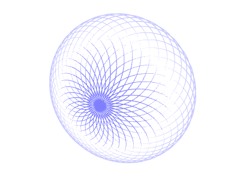
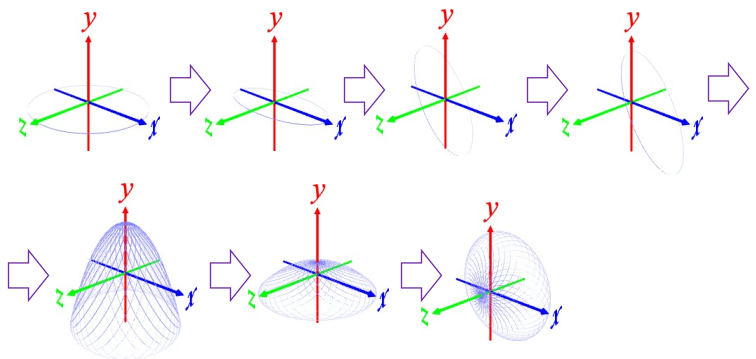

polygon 100 1 -0.01 ･･･ 半径 1, 厚み0.01 の正 100 角形(円環)を作る。厚みのマイナスは側面のみ(蓋、底面なし)の指定
s 1 1 0.5 ･･･ z 方向を半分につぶす
r 0 0 -60 ･･･ z 軸周りに 60°回転する
t 0.5 0 0 ･･･ x 軸方向に 0.5 移動する
r 0 10 0 36 ･･･ y 軸周りに 10°回転を 36 回実行
s 1 1/4 1 ･･･ y 方向を 1/4 につぶす
r 90 0 0 ･･･ x 軸周りに 90°回転( z 軸方向に向ける)
